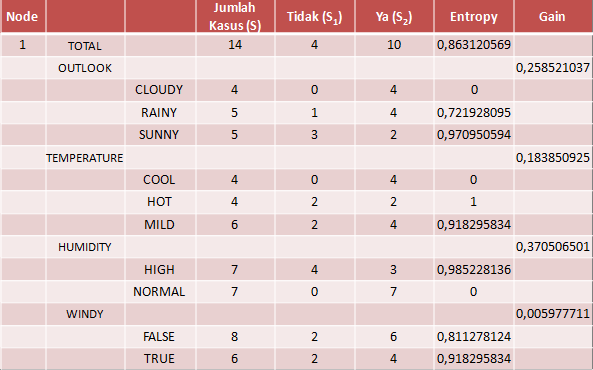

**DECISION TREE **¶
pengertian decision tree¶
Decision Tree (Pohon Keputusan) adalah pohon dimana setiap cabangnyamenunjukkan pilihan diantara sejumlah alternatif pilihan yang ada, dan setiapdaunnya menunjukkan keputusan yang dipilih.Decision tree biasa digunakan untuk mendapatkan informasi untuk tujuanpengambilan sebuah keputusan. Decision tree dimulai dengan sebuah root node(titik awal) yang dipakai oleh user untuk mengambil tindakan. Dari node root ini,user memecahnya sesuai dengan algoritma decision tree. Hasil akhirnya adalahsebuah decision tree dengan setiap cabangnya menunjukkan kemungkinansekenario dari keputusan yang diambil serta hasilnya
¶
Pembentukan pohon keputusan terdiri dari beberapa tahap :¶
1. Konstruksi pohon diawali dengan pembentukan akar (terletak paling atas). Kemudian data dibagi berdasarkan atribut-atribut yang cocok untuk dijadikan daun.
2. Pemangkasan pohon (tree pruning) yaitu mengidentifikasikan dan membuang cabang yang tidak diperlukan pada pohon yang telah terbentuk. Hal ini dikarenakan pohon keputusan yang dikontruksi dapat berukuran besar, maka dapat disederhanakan dengan melakukan pemangkasan berdasarkan nilai kepercayaan (confident level). Pemangkasan pohon dilakukan selain untuk pengurangan ukuran pohon juga bertujuan untuk mengurangi tingkat kesalahan prediksi pada kasus baru dari hasil pemecahan yang dilakukan dengan divide and conquer. Pruning ada dua pendekatan yaitu :
a. Pre-pruning yaitu menghentikan pembangunan suatu subtree lebih awal (dengan memutuskan untuk tidak lebih jauh mempartisi data training). Saat seketika berhenti, maka node berubah menjadi leaf (node akhir). Node akhir ini menjadi kelas yang paling sering muncul di antara subset sampel.
b. Post-pruning yaitu menyederhanakan tree dengan cara membuang beberapa cabang subtree*setelah *tree selesai dibangun. Node yang jarang dipotong akan menjadi leaf (node akhir) dengan kelas yang paling sering muncul.
3. Pembentukan aturan keputusan yaitu membuat aturan keputusan dari pohon yang telah dibentuk. Aturan tersebut dapat dalam bentuk if — then diturunkan dari pohon keputusan dengan melakukan penelusuran dari akar sampai ke daun. Untuk setiap simpul dan percabangannya akan diberikan di if, sedangkan nilai pada daun akan ditulis di then. Setelah semua aturan dibuat maka aturan dapat disederhanakan atau digabung.
Decision tree adalah suatu model klasifikasi yang paling populer karena mudah diinterpretasikan oleh manusia. Banyak algoritma yang dapat digunakan dalam pembentukan pohon keputusan seperti ID3, C4.5, CART, dan GUIDE. Algoritma decision tree banyak digunakan dalam proses data mining karena memiliki beberapa kelebihan :
- Mudah mengintegrasikan dengan sistem basis data.
- Memiliki ketelitian yang baik.
- Dapat menemukan gabungan tak terduga dari suatu data.
- Daerah pengambilan keputusan yang sebelumnya kompleks dan sangat global dapat diubah menjadi lebih sederhana dan spesifik.
- Dapat melakukan eliminasi untuk perhitungan-perhitungan yang tidak diperlukan. Karena ketika menggunakan metode ini maka sampel hanya diuji berdasarkan kriteria atau kelas tertentu.
- Fleksibel untuk memilih fitur dari internal node yang berbeda, fitur yang terpilih akan membedakan suatu kriteria dibandingkan kriteria yang lain dalam node yang sama.
Kekurangan pohon keputusan adalah.
- Terjadi overlap terutama ketika kelas-kelas dan kriteria yang digunakan jumlahnya sangat banyak. Hal tersebut juga dapat menyebabkan meningkatnya waktu pengambilan keputusan dan jumlah memori yang diperlukan.
- Pengakumulasian jumlah error dari setiap tingkat dalam sebuah pohon keputusan yang besar.
- Kesulitan dalam mendesain pohon keputusan yang optimal.
- Hasil kualitas keputusan yang didapatkan dari metode pohon keputusan sangat bergantung pada bagaimana pohon tersebut didesain.
Contoh Perhitungan Decision Tree dengan Algoritma¶
Berikut ini akan saya berikan contoh pergitungan decision tree menggunakan algoritma C45 yang saya dapat dari berbagai sumber, sebagai referensi anda.Baik langsung saja berikut pejelasannya
Untuk menentukan bermain tenis atau tidak, kriteria yang diperlukan meliputi: -Cuaca -Angin -Kelembaban -Temperatur udara
Salah satu atribut merupakan data solusi per item data yang disebut target atribut -> misalnya atribut “play” degan nilai “main” atau “tidak main” Atribut memiliki nilai-nilai yang dinamakan “instance” Misalkan atribut “Cuaca” memiliki instance -> cerah, berawan, dan hujan.

Berdasakan tabel diatas akan dibuat tabel keputusan untuk menentukan main tenis atau tidak dengan melihat keadaan Outlook (cuaca), Temperatur, Humidity (kelembaban), dan windy (keadaan angin).
Algoritma secara umum:
-Pilih atribut sebagai akar
-Buat cabang untuk tiap2 nilai
-Bagi kasus dalam cabang
-Ulangi proses utk setiap cabang sampai semua kasus pada cabang memiliki kelas yang sama
Memilih atribut berdasarkan nilai “gain” tertinggi dari atribut-atribut yang ada.
Perhitungan Gain

Keterangan:
S : himpunan
A : atribut
n : jumlah partisi atribut A
| Si | : jumlah kasus pada partisi ke-i
| S | : jumlah kasus dalam S
Menghitung Nilai Entropy

Perincian algoritma ( langkah 1)
- Menghitung jumlah kasus seluruhnya, jumlah berkeputusan “Yes” maupun “No”.
- Menghitung Entropy dari semua kasus yg terbagi berdasarkan atribut “Outlook”, “Temperature”,“Humidity”, “Windy”.
- Lakukan penghitungan Gain utk setiap atributnya
Perhitungan

Perhitungan Total Entropy
Menghitung gain pada baris Outlook

Lakukan Hitung Gain untuk temperature, humidity dan windy
Sepert yg terlihat pd tabel, diperoleh bhw atribut dgn Gain tertinggi adalah Humidity -> 0,37
Maka Humidity menjadi node akar
Humidity memiliki dua nilai yaitu “High” dan “Normal”
Humidity -> “Normal” sdh mengklasifikasikan kasus menjadi 1 yaitu keputusannya “yes”
Untuk humidity -> “High” msh perlu dilakukan perhitungn lagi (karena masih terdapat “yes” dan “no”)
Pohon Keputusan Node 1
Perincian Algoritma (Langkah 2)
Hasil perhitungan (Langkah 2)
Didapat Gain tertinggi -> outlook -> 0,69
Maka “Outlook” menjadi node cabang dari atribut humidity yg bernilai “High”
Berdasarkan atribut “Outlook” terdpt 3 nilai
Cloudy
Rainy
Sunny
Krn “Cloudy” pasti bernilai “Yes” dan “Sunny” pasti bernilai “No”, maka tdk perlu dilakukan perhitungan lagi
Sedangkan “Rainy” bernilai “yes” dan “No”, maka masih perlu dilakukan perhitungan lagi
Pohon keputusan node 1.1
Hasil perhitungan (Langkah 3)
Didapat Gain tertinggi -> Windy -> 1
Maka “Windy” menjadi node cabang dari atribut humidity yg bernilai “High” dan outlook yg bernilai “Rainy”
Berdasarkan atribut “Windy” terdpt 2 nilai
True
False
Karena “True” sdh terklasifikasi pasti bernilai “No” dan “False” pasti bernilai “Yes”, maka tidak perlu dilakukan perhitungan lagi
Pohon keputusan node 1.1.2
Hasil perhitungan (Langkah 3)
Berdasarkan node 1.1.2, maka:
“Semua kasus sudah masuk dapat kelas”
Sehingga pohon keputusan diatas merupakan pohon keputusan terakhir yang terbentuk
Seperti yang telah diketahui macam-macam Algoritma Decison tree ada 3 yaitu :
- Algoritma C4.5
- ID3 -> merupakan pengembangan C4.5
- CART
Perhitungan diatas adalah implementasi menggunakan Algoritma C45, semoga bermanfaat sebagai bahan referensi anda.
Implementasi¶¶
Library yang diperlukan¶¶
- Panda 0.20.3
- IPython
- Sklearn 0.19.1
- pydotplus
- graphviz
- Jupyter Notebook —-> gua pake ini untuk IDE nya
Untuk keseluruhan code nya dapat dilihat di bagian paling bawah tulisan ini
import pandas as pd
from sklearn.tree import DecisionTreeClassifier # Import Decision Tree Classifier
from sklearn.model_selection import train_test_split # Import train_test_split function
from sklearn import metrics #Import scikit-learn metrics module for accuracy calculation
import numpy as np
import pandas as pd
import matplotlib.pyplot as plt
from sklearn.tree import export_graphviz
from sklearn.externals.six import StringIO
from IPython.display import Image
import pydotplus
dataset = pd.read_csv('go_track_tracks2.csv')
x = dataset[['id_android','speed','time','distance','rating','rating_bus','rating_weather']]
y = dataset[['car_or_bus']]
from sklearn.model_selection import train_test_split
x_train, x_test, y_train, y_test = train_test_split(x, y, test_size = 0.25, random_state = 0 )
x_trainclf = DecisionTreeClassifier(criterion='entropy', max_depth=3)
clf.fit(x_train, y_train)
predicted_y = clf.predict(x_test)feature_cols = ['id_android','speed','time','distance','rating','rating_bus','rating_weather']
dot_data = StringIO()
export_graphviz(clf, out_file=dot_data,
filled=True, rounded=True,
special_characters=True, feature_names = feature_cols,class_names=['negatif','positif'])
graph = pydotplus.graph_from_dot_data(dot_data.getvalue())
graph.write_png('PimaIndians.png')
Image(graph.create_png())